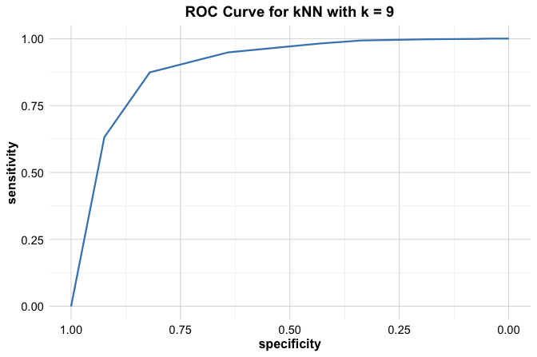

8 Evaluating Machine Learning Models
How do we know whether a machine learning model is actually good? Is 95% accuracy always impressive, or can it be misleading? How do we balance catching true cases while minimizing false alarms? These are the kinds of questions we begin to answer in this chapter.
Consider this: if you give the same dataset and research question to ten different data science teams, you are likely to receive ten different results, often with dramatically different conclusions. Why does this happen? These differences often arise not from the data or models themselves, but from how each team evaluates their results. One team’s “successful” model might be another team’s failure, depending on the metrics they prioritize, how they set thresholds, and what trade-offs they are willing to make. As George Box famously said, “All models are wrong, but some are useful.” Evaluation helps us determine which models are useful enough to inform decisions and guide action. This chapter gives you the tools to understand those differences, and to evaluate models with clarity and confidence.
In the previous chapter, we introduced our first machine learning algorithm: kNN. We learned how to build a classifier using the churn dataset, carefully scaling features and tuning the number of neighbors to improve predictions. This raises a critical question: How can we determine whether the model truly performs well?
This brings us to the Model Evaluation phase, a pivotal step in the Data Science Workflow first introduced in Chapter 2 and illustrated in Figure 2.3. By this point, we have already completed the first five phases:
Problem Understanding: defining the question we aim to solve;
Data Preparation: cleaning, transforming, and organizing the data;
Exploratory Data Analysis (EDA): identifying patterns and relationships;
Data Setup to Model: scaling, encoding, and partitioning the data;
Modeling: training algorithms to make predictions or uncover structure.
Now, we arrive at Model Evaluation, where we assess the performance and reliability of our models using quantitative metrics. This phase answers the essential question: How well does our model generalize to new, unseen data?
A model may perform well during development but fail in deployment, where data distributions can shift and the cost of errors is often higher. Model evaluation ensures that our predictions are trustworthy and that the model captures genuine patterns rather than memorizing noise.
Why Is Model Evaluation Important?
Developing a model is only the beginning. Its real value lies in its ability to generalize to new, unseen data. A model may perform well during development but fail in real-world deployment, where data distributions often shift and the cost of errors can be much higher.
Consider a model built to detect fraudulent credit card transactions. Suppose it achieves 95% accuracy. While this might sound impressive, it could be misleading if only 1% of the transactions are actually fraudulent. In such an imbalanced dataset, a model might simply label all transactions as legitimate to attain high accuracy, yet fail entirely to detect fraud. This example illustrates a crucial point: accuracy alone does not always tell the full story, especially in class-imbalanced settings.
Effective model evaluation offers a more nuanced view of performance by revealing both strengths and limitations. It helps clarify what the model does well, such as correctly identifying fraud, and where it falls short, such as missing fraudulent cases or producing too many false alarms. It also surfaces trade-offs between competing priorities, such as sensitivity versus specificity, or precision versus recall.
In this sense, evaluation is not just about metrics, it is about trust. A well-evaluated model informs responsible decision-making by aligning performance with the needs and risks of the application. Key questions include:
How well does the model handle class imbalance?
Can it reliably detect true positives, such as diagnosing cancer in medical data?
Does it minimize false positives, such as incorrectly classifying a legitimate email as spam?
These considerations show why model evaluation is a critical step in the data science workflow. Choosing appropriate metrics, and interpreting them in context, enables us to move beyond surface-level performance and toward robust, reliable solutions.
What This Chapter Covers
This chapter introduces essential tools for evaluating machine learning models. We begin with binary classification, focusing on how to interpret confusion matrices and compute key performance metrics such as accuracy, precision, recall, and the F1-score. We also examine how adjusting classification thresholds can influence predictions and introduce ROC curves and the Area Under the Curve (AUC) as effective tools for visualizing and comparing classifier performance.
We then introduce evaluation metrics for regression models, including Mean Absolute Error (MAE) and the coefficient of determination (\(R^2\)), with guidance on interpreting these values in applied contexts.
These evaluation metrics are among the most widely used in machine learning. They will appear frequently in the chapters that follow as we explore a variety of classification and regression algorithms. Mastering them now will equip you with the tools to assess and compare models throughout the rest of the book.
To build your intuition, this chapter includes visualizations and practical examples for each evaluation method. By the end, you will be able to choose appropriate metrics for different tasks, interpret model performance critically, and evaluate models effectively in both classification and regression settings.
We begin with one of the most foundational tools in model evaluation: the confusion matrix, which provides a structured summary of prediction outcomes.
8.1 Confusion Matrix
How can we tell exactly where a model performs well, and where it fails? The confusion matrix provides a structured answer. It is one of the most fundamental tools for evaluating classification models, breaking down predictions into four outcomes based on the comparison of predicted and actual class labels.
In binary classification, one class is typically designated as the positive class, the class of primary interest, while the other is considered the negative class. For instance, in fraud detection, fraudulent transactions are usually labeled as positive, and legitimate ones as negative.
Figure 8.1 illustrates the structure of the confusion matrix. The rows represent the actual class labels, while the columns represent the predicted class labels. Each cell in the matrix represents one of four possible outcomes. True Positives (TP) occur when the model correctly predicts the positive class (e.g., fraud detected as fraud). False Positives (FP) arise when the model incorrectly flags the positive class (e.g., legitimate transactions incorrectly flagged as fraud). True Negatives (TN) are correct predictions of the negative class, while False Negatives (FN) represent missed detections of the positive class (e.g., fraudulent transactions classified as legitimate).
This structure may feel familiar, it mirrors the concept of Type I and Type II errors introduced in Chapter 5 on hypothesis testing. The diagonal elements (TP and TN) represent correct predictions, while the off-diagonal elements (FP and FN) represent errors.
With the confusion matrix in hand, we can compute basic performance metrics. Two of the most general are accuracy and error rate.
Accuracy (also called success rate) measures the proportion of correct predictions:
\[ \text{Accuracy} = \frac{\text{TP} + \text{TN}}{\text{Total Predictions}} = \frac{\text{TP} + \text{TN}}{\text{TP} + \text{FP} + \text{FN} + \text{TN}} \]
Error rate is the proportion of incorrect predictions:
\[ \text{Error Rate} = 1 - \text{Accuracy} = \frac{\text{FP} + \text{FN}}{\text{Total Predictions}} \]
These metrics offer a broad summary of model performance. However, they can be misleading. Imagine a dataset in which only 5% of transactions are fraudulent. A model that labels all transactions as legitimate would still achieve 95% accuracy, yet completely fail to detect fraud. This illustrates a classic case where accuracy hides deeper weaknesses, especially in imbalanced datasets.
To better understand a model’s strengths and weaknesses, such as how well it identifies positive cases or avoids false alarms, we need more detailed metrics. The next section introduces sensitivity, specificity, precision, and recall.
Let us revisit the kNN model from Chapter 7, which was used to predict customer churn using the churn dataset. We now evaluate its performance using a confusion matrix. We begin by applying the kNN model to the test set:
library(liver)
data(churn)
set.seed(42)
data_sets = partition(data = churn, ratio = c(0.8, 0.2))
train_set = data_sets$part1
test_set = data_sets$part2
test_labels = test_set$churn
formula = churn ~ account.length + voice.plan + voice.messages +
intl.plan + intl.mins + intl.calls +
day.mins + day.calls + eve.mins + eve.calls +
night.mins + night.calls + customer.calls
kNN_predict = kNN(formula = formula, train = train_set,
test = test_set, k = 9, scaler = "minmax")For details on how this model was built, see Section 7.7. Here we use scaler = "minmax" to scale numeric features to the \([0, 1]\) range and one-hot encode binary variables.
In R, one way to compute a confusion matrix is by using the conf.mat() function from the liver package, which provides a consistent interface for classification evaluation. The same package also includes conf.mat.plot() for visualizing confusion matrices, making interpretation more intuitive.
We compute the confusion matrix as follows:
conf.mat(pred = kNN_predict, actual = test_labels, reference = "yes")
Actual
Predict yes no
yes 49 6
no 96 849The conf.mat() function accepts several key arguments. The pred argument specifies the predicted class labels or probabilities, while actual contains the true labels from the test set. The reference argument designates which class is treated as the positive class. The optional cutoff argument is used when probabilities are predicted (defaulting to 0.5), but it is not needed here because kNN_predict returns class labels. In this example, "yes" denotes the positive class, indicating customers who churned.
The confusion matrix shows that the model correctly identified 49 churners (true positives) and 849 non-churners (true negatives). However, it also incorrectly predicted that 96 non-churners would churn (false positives), and failed to identify 6 actual churners (false negatives).
We can also visualize the confusion matrix:
conf.mat.plot(pred = kNN_predict, actual = test_labels)
Setting levels: reference = "yes", case = "no"
This plot provides a clear visual summary of prediction outcomes.
Next, we compute the accuracy and error rate:
\[ \text{Accuracy} = \frac{49 + 849}{1000} = 0.898 \]
\[ \text{Error Rate} = \frac{96 + 6}{1000} = 0.102 \]
Thus, the model correctly classified 89.8% of cases, while 10.2% were misclassified.
Having reviewed accuracy and error rate, we next turn to additional evaluation metrics that provide more insight into a model’s strengths and limitations, particularly in imbalanced or high-stakes classification settings. The next section introduces sensitivity, specificity, precision, and recall.
8.2 Sensitivity and Specificity
Suppose your model achieves 98% accuracy in detecting credit card fraud. Sounds impressive, but what if only 2% of transactions are actually fraudulent? Could a model that simply labels every transaction as not fraud still reach that 98% accuracy? This is where accuracy falls short, and where sensitivity and specificity become essential.
In classification, it is not enough to know how many predictions are correct overall. We also need to understand how well the model identifies each class. Sensitivity and specificity are two complementary metrics that help answer this question, especially in situations with imbalanced data, when one class appears much more frequently than the other.
These metrics allow us to examine the model’s strengths and weaknesses more critically by asking whether it can detect rare but important cases, such as fraud or disease, and whether it avoids misclassifying too many negative cases. By separating performance across the positive and negative classes, sensitivity and specificity help us go beyond accuracy and build more trustworthy models.
8.2.1 Sensitivity
How good is your model at catching the cases that matter most? That is the question sensitivity helps answer. Sensitivity, also known as recall in fields like information retrieval, measures a model’s ability to correctly identify positive cases. In other words, it answers: Out of all the actual positives, how many did the model correctly predict?
This matters most in situations where missing a positive case has serious consequences, such as failing to detect fraud or disease. The formula for sensitivity is:
\[ \text{Sensitivity} = \frac{\text{True Positives (TP)}}{\text{True Positives (TP)} + \text{False Negatives (FN)}} \]
Let us apply this to the kNN model from Chapter 7, where we predicted customer churn (churn = yes). Sensitivity tells us the percentage of customers who actually left, and were correctly flagged by the model. Using the confusion matrix from the previous section, we have:
\[ \text{Sensitivity} = \frac{\text{TP}}{\text{TP} + \text{FN}} = \frac{49}{49 + 6} = 0.891 \]
This means the model correctly identified 89.1% of actual churners.
Note that a model with 100% sensitivity flags every single positive case. But here’s the catch: even a model that labels everyone as positive would score perfectly on sensitivity. That is why this metric must always be interpreted in context, with help from other measures like specificity and precision.
8.2.2 Specificity
If sensitivity tells us how well a model catches the positive cases, specificity tells us how well it avoids false alarms. Specificity measures the model’s ability to correctly identify negative cases. It answers the question: Out of all the actual negatives, how many did the model correctly predict?
This becomes crucial when false positives are costly. Think of spam filters: marking a legitimate email as spam (a false positive) might cause users to miss important messages. In such cases, high specificity is essential. The formula for specificity is:
\[ \text{Specificity} = \frac{\text{True Negatives (TN)}}{\text{True Negatives (TN)} + \text{False Positives (FP)}} \]
Let us return to the kNN model from Chapter 7, where we predicted customer churn. Specificity in this case tells us how well the model identified customers who did not churn.
Using the confusion matrix from the previous section, we can compute specificity as follows:
\[ \text{Specificity} = \frac{\text{TN}}{\text{TN} + \text{FP}} = \frac{849}{849 + 96} = 0.898 \]
This means the model correctly identified 89.8% of the customers who stayed.
While each metric is valuable on its own, in practice, we often want high sensitivity and high specificity. But boosting one can sometimes lower the other. The right balance depends on your application. For the kNN model in the previous section, sensitivity is 0.891, while specificity is 0.898. This trade-off may be acceptable in this context, as identifying churners (sensitivity) is often more important than minimizing false positives (specificity).
Sensitivity vs. Specificity: A Balancing Act
The trade-off between sensitivity and specificity is a central consideration in the evaluation of classification models. In many practical applications, improving one of these metrics tends to reduce the other: increasing sensitivity typically results in more false positives, thereby decreasing specificity, while increasing specificity may lower the number of false positives but can lead to more false negatives, thus reducing sensitivity.
The appropriate balance depends on the context and the relative costs of different types of errors. For instance, in medical diagnostics, failing to identify a disease case (a false negative) may have severe consequences. In such situations, models with high sensitivity are preferred, even at the expense of a higher false positive rate. Conversely, in applications such as email spam detection, misclassifying a legitimate message as spam (a false positive) can be more problematic than missing a few spam messages. In these cases, higher specificity is more desirable.
Understanding the interplay between these two metrics allows practitioners to tailor model evaluation to the priorities and risks associated with a specific application. In the next section, we introduce two additional metrics, precision and recall, that provide further insight into the model’s effectiveness in detecting and correctly classifying the positive class.
8.3 Precision, Recall, and F1-Score
Imagine you are designing a system to detect fraudulent credit card transactions. If your model predicts fraud and it is wrong, an annoyed customer gets a call and may lose trust in your service. But if it fails to detect actual fraud, money is lost. Which mistake is worse?
This kind of dilemma reveals why metrics beyond accuracy are essential. Accuracy tells us how often the model is right, but not how it goes wrong. Sensitivity tells us how many positives we catch, but not how many false alarms we raise. Precision and recall close this gap.
When your model flags a customer as likely to churn, how confident can you be that it is right? And how often does it miss actual churners? These are the kinds of questions precision and recall help us answer.
In addition to sensitivity and specificity, the metrics of Precision, recall, and the F1-score provide a more detailed view of a classification model’s performance. These metrics are especially useful in imbalanced datasets, where accuracy can be misleading.
Precision, also referred to as the positive predictive value, measures how many of the predicted positives are actually positive. It answers the question: When the model predicts a positive case, how often is it correct?
This is formally defined as:
\[ \text{Precision} = \frac{\text{TP}}{\text{TP} + \text{FP}} \]
Precision becomes particularly important in applications where false positives are costly. In fraud detection, for example, incorrectly flagging legitimate transactions can inconvenience customers and require unnecessary investigation.
Recall, which is equivalent to sensitivity, measures the model’s ability to identify all actual positive cases. It addresses the question: Out of all the actual positives, how many did the model correctly identify?
The formula for recall is:
\[ \text{Recall} = \frac{\text{TP}}{\text{TP} + \text{FN}} \]
Recall is crucial in settings where missing a positive case has serious consequences, such as medical diagnosis or fraud detection. Recall is synonymous with sensitivity; both measure how many actual positives are correctly identified. While the term sensitivity is common in biomedical contexts, recall is often used in fields like information retrieval and text classification.
There is typically a trade-off between precision and recall. Increasing precision makes the model more conservative in predicting positives, which reduces false positives but may also miss true positives, resulting in lower recall. Conversely, increasing recall ensures more positive cases are captured, but often at the cost of a higher false positive rate, thus lowering precision. For instance, in cancer screening, maximizing recall ensures no cases are missed, even if some healthy patients are falsely flagged. In contrast, in email spam detection, a high precision is desirable to avoid misclassifying legitimate emails as spam.
To quantify this trade-off, the F1-score combines precision and recall into a single metric. It is the harmonic mean of the two:
\[ F1 = 2 \times \frac{\text{Precision} \times \text{Recall}}{\text{Precision} + \text{Recall}} = \frac{2 \times \text{TP}}{2 \times \text{TP} + \text{FP} + \text{FN}} \]
The F1-score is particularly valuable when dealing with imbalanced datasets. Unlike accuracy, it accounts for both false positives and false negatives, offering a more balanced evaluation.
Let us now compute these metrics using the kNN model in Section 8.1, which predicts whether a customer will churn (churn = yes).
Precision measures how often the model’s churn predictions are correct:
\[ \text{Precision} = \frac{\text{TP}}{\text{TP} + \text{FP}} = \frac{49}{49 + 96} = 0.338 \]
This indicates that the model’s predictions of churn are correct in 33.8% of cases.
recall (or sensitivity) reflects how many actual churners were correctly identified:
\[ \text{Recall} = \frac{\text{TP}}{\text{TP} + \text{FN}} = \frac{49}{49 + 6} = 0.891 \]
The model thus successfully identifies 89.1% of churners.
F1-score combines these into a single measure:
\[ F1 = \frac{2 \times 49}{2 \times 49 + 96 + 6} = 0.49 \]
This score summarizes the model’s ability to correctly identify churners while balancing the cost of false predictions.
The F1-score is a valuable metric when precision and recall are both important. However, in practice, their relative importance depends on the context. In healthcare, recall might be prioritized to avoid missing true cases. In contrast, in filtering systems like spam detection, precision may be more important to avoid misclassifying valid items.
In the next section, we shift our focus to metrics that evaluate classification models across a range of thresholds, rather than at a fixed cutoff. This leads us to the ROC curve and AUC, which offer a broader view of classification performance.
8.4 Taking Uncertainty into Account
Imagine a doctor evaluating whether a patient has a rare disease. The model outputs a 0.72 probability. Should the doctor act on this prediction? This scenario illustrates a critical point in classification: many models can return probability estimates, not just hard labels. These probabilities express the model’s confidence in its predictions, offering a richer basis for decision-making than binary outputs alone.
Most of the evaluation metrics we have discussed, such as precision, recall, and the F1-score, are based on fixed, binary predictions. But this perspective omits an important aspect of many classification models: uncertainty.
Many models, including k-Nearest Neighbors (kNN), can return predicted probabilities. These scores reflect the likelihood that an instance belongs to the positive class. To convert probabilities into class labels, a classification threshold must be chosen. A value of 0.5 is commonly used by default: if the predicted probability exceeds 50%, the instance is labeled as positive. However, this threshold is not fixed in stone. Adjusting it can significantly change a model’s behavior and allows it to better reflect the priorities of a specific application.
For instance, in fraud detection, missing a fraud case (a false negative) may be more costly than flagging a legitimate transaction (a false positive). In such cases, lowering the threshold can increase sensitivity, capturing more fraud cases even at the expense of additional false alarms. Conversely, in spam filtering, false positives may be more problematic, and a higher threshold may be preferable to protect legitimate emails.
Let us return to the kNN model in Section 8.1, which predicts customer churn (churn = yes). This time, we extract predicted probabilities by setting type = "prob" in the kNN() function:
kNN_prob = kNN(formula = formula, train = train_set,
test = test_set, k = 9, scaler = "minmax",
type = "prob")
kNN_prob[1:6, ]
yes no
5 0.4444444 0.5555556
11 0.2222222 0.7777778
21 0.1111111 0.8888889
22 0.5555556 0.4444444
24 0.0000000 1.0000000
28 0.1111111 0.8888889The matrix kNN_prob has one column per class, so column 1 represents the model’s estimated probability that each observation belongs to the positive class (churn = yes) and the second column represents the probability for the negative class (churn = no). For example, the first entry of the first column is 0.44, which means the model is 44% confident the customer will churn (churn = yes).
The
type = "prob"option is available for all classification models introduced in this book, making probability-based evaluation consistent across methods.
To convert these probabilities to class predictions, we use the cutoff argument in the conf.mat() function. Here, we compare two different thresholds:
conf.mat(kNN_prob[, 1], test_labels, reference = "yes", cutoff = 0.5)
Actual
Predict yes no
yes 49 6
no 96 849
conf.mat(kNN_prob[, 1], test_labels, reference = "yes", cutoff = 0.7)
Actual
Predict yes no
yes 11 1
no 134 854Note that kNN_prob[, 1] extracts the predicted probabilities for churn = yes from the first column of the kNN_prob matrix. A threshold of 0.5 casts a wider net, predicting churn for anyone with at least 50% probability. This increases sensitivity but may allow more false positives. A threshold of 0.7 is stricter, requiring stronger evidence (70% certainty) before labeling a customer as likely to churn. This generally reduces false positives but risks missing actual churners.
Adjusting the decision threshold helps adapt model behavior to real-world needs where the costs of errors are not equal. In practice, lower thresholds increase sensitivity but reduce specificity. Higher thresholds increase specificity but reduce sensitivity.
This flexibility is essential in domains such as fraud detection or medical screening.
Tuning the Classification Threshold
Fine-tuning the classification threshold helps tailor a model to practical constraints. Suppose we want a sensitivity of at least 90% to ensure most churners are flagged. By adjusting the threshold and recalculating evaluation metrics, we can determine the operating point, the threshold that satisfies this requirement.
Of course, this involves trade-offs. Lowering the threshold generally boosts recall but may harm precision. Raising it does the opposite. For instance, a threshold of 0.9 might lead to excellent specificity but fail to detect most actual churners.
In short, threshold tuning transforms classification from a one-size-fits-all decision rule into a flexible tool that aligns model output with domain-specific priorities.
Manual tuning is helpful, but a more comprehensive view is needed to fully assess a model’s discriminatory power. To build on this idea, the next section introduces two powerful tools, the ROC curve and the AUC, which allow us to evaluate model performance across all possible thresholds.
8.5 Receiver Operating Characteristic (ROC) curve
How can we fairly compare models when performance depends on the threshold we choose? Imagine building a medical diagnostic tool: adjusting the classification threshold might improve sensitivity but worsen specificity. To understand how models behave across all thresholds, and to compare them systematically, we turn to the ROC curve and its associated metric, the Area Under the Curve (AUC).
The ROC curve visually represents the trade-off between sensitivity (true positive rate) and the false positive rate (1 – specificity) across various classification thresholds. It plots sensitivity (true positive rate) on the vertical axis against the false positive rate on the horizontal axis. Originally developed for radar signal detection during World War II, the ROC curve is now widely used in machine learning to evaluate classifier performance. In practice, ROC curves are especially useful for comparing different classification models, such as logistic regression, decision trees, and random forests. We will return to this idea in upcoming case studies, where ROC curves and AUC scores help us select the best-performing model.
Figure 8.2 illustrates three common performance scenarios:
Optimal Performance (Green Curve): A model with near-perfect performance reaches the top-left corner, indicating high sensitivity and specificity.
Good Performance (Blue Curve): A well-performing model stays closer to the top-left corner, though not perfectly.
Random Classifier (Red Diagonal Line): The dashed diagonal represents random guessing, with no predictive power.
Each point on the ROC curve corresponds to a specific threshold. As the threshold changes, the sensitivity and false positive rate vary, tracing out the curve. A curve that hugs the top-left corner reflects stronger performance, whereas curves closer to the diagonal suggest weak or random classification.
This visualization helps illustrate key trade-offs. For example, in medical diagnostics, maximizing sensitivity is important to avoid missing cases, even at the cost of some false positives. In fraud detection, high specificity reduces unnecessary investigations by avoiding false positives.
To construct an ROC curve, predicted probabilities for the positive class and the actual class labels are needed. Correctly predicted positives move the curve upward (increased sensitivity), while false positives move it to the right (increased false positive rate). Let us now see how this works in practice by applying it to the kNN model.
We return to the kNN model in Section 8.4, where we obtained probability scores for the positive class (churn = yes). We now use these probabilities to generate the ROC curve. The pROC package in R provides tools to compute and visualize ROC curves. If it is not already installed, you can do so using install.packages("pROC").
To construct the ROC curve, we use the roc() function from the pROC package. It requires two main arguments: response, which contains the actual class labels from the test set, and predictor, a numeric vector of predicted probabilities for the positive class. In our case, test_labels contains the true labels, and kNN_prob[, 1] extracts the predicted probabilities for churn = yes from the first column of the kNN_prob matrix. The first column contains probabilities for the positive class, which is essential for computing the ROC curve.
We then use the ggroc() function to visualize the ROC curve. It takes an ROC object and generates a ggplot2 visualization for easier customization and clearer display:
ggroc(roc_knn, colour = "blue") +
ggtitle("ROC curve for kNN with k = 9, based on churn data")
This ROC curve shows how the model’s true positive rate and false positive rate vary as we adjust the classification threshold. A curve closer to the top-left corner indicates better classification performance. In this case, the ROC curve suggests that the kNN model is effective at distinguishing churners from non-churners.
While the ROC curve provides a visual summary of a model’s classification performance across all thresholds, we often need a single numeric value to compare models more directly. This is where the AUC becomes valuable.
8.6 Area Under the Curve (AUC)
While the ROC curve provides a visual summary of a model’s performance across all thresholds, it is often useful to quantify this performance with a single number. The AUC serves this purpose. It measures how well the model ranks positive cases higher than negative ones, independent of any particular threshold.
Mathematically, AUC is defined as:
\[ \text{AUC} = \int_{0}^{1} \text{TPR}(t) \, d\text{FPR}(t) \]
where \(t\) denotes the classification threshold. A larger AUC value indicates better discrimination between the positive and negative classes across all possible thresholds.

As shown in Figure 8.3, the AUC ranges from 0 to 1. A value of 1 indicates a perfect model, 0.5 corresponds to random guessing, and values between 0.5 and 1 reflect varying degrees of predictive power.
To compute the AUC in R, we use the auc() function from the pROC package. This function takes an ROC object, such as the one created earlier using roc(), and returns a numeric value:
auc(roc_knn)
Area under the curve: 0.897Here, roc_knn is the ROC object based on predicted probabilities for churn = yes. The resulting value represents the model’s ability to rank churners above non-churners. For example, the AUC for the kNN model is 0.897, meaning that it ranks churners higher than non-churners with a probability of 0.897.
AUC is especially useful when comparing multiple models or when the costs of false positives and false negatives differ. Unlike accuracy, AUC is threshold-independent, providing a more holistic measure of model quality.
In summary, the ROC curve and AUC offer a robust framework for evaluating classifiers, particularly on imbalanced datasets or in applications where the balance between sensitivity and specificity matters. In the next section, we explore how these ideas extend to multi-class classification, where evaluation requires new strategies to handle more than two outcome categories.
8.7 Metrics for Multi-Class Classification
So far, we have evaluated binary classifiers using metrics like precision, recall, and AUC. But what if your model needs to go beyond “spam or not” and predict whether an image contains a dog, a cat, or a bird? Many real-world problems involve multi-class classification, where the target variable has three or more categories. Examples include classifying types of tumors, predicting modes of transportation, or identifying product categories in retail.
In multi-class settings, the confusion matrix expands into a square grid where rows represent actual classes and columns represent predicted classes, as shown in Figure 8.4. The left matrix in the figure shows a binary (2×2) case, while the right matrix displays a three-class (3×3) case. Correct predictions lie along the diagonal; off-diagonal cells highlight common misclassifications between classes and reveal performance bottlenecks.

To compute metrics such as precision, recall, or F1-score in multi-class settings, we use a one-vs-all strategy. This approach treats each class in turn as the positive class and groups all other classes as negative. This strategy allows us to isolate performance for each class, which is useful for diagnosing strengths and weaknesses in specific categories using the familiar binary classification framework.
Since multi-class problems involve multiple binary evaluations, we need ways to summarize these into a single score to compare models effectively. To do this, we use different averaging strategies:
Macro-average: Computes the unweighted mean of the per-class metrics, treating all classes equally. This is useful when misclassifying any class is equally costly, such as in disease subtype classification.
Micro-average: Aggregates the individual true positives, false positives, and false negatives across all classes, then calculates metrics from these totals. This method favors majority classes and reflects the model’s overall predictive effectiveness across all examples, as might be desirable in quality control applications.
Weighted-average: Computes a weighted mean of the per-class metrics, where the weight corresponds to the number of true instances (support) for each class. This balances attention between common and rare classes and is especially useful in class-imbalanced problems such as fraud detection.
These averaging techniques ensure that performance evaluation remains meaningful even when class distribution is skewed or certain categories are more important. When interpreting averaged metrics, it is essential to consider how class imbalance or business priorities might influence the final interpretation.
While ROC curves and AUC are inherently binary, they can be extended to multi-class problems using a one-vs-all approach. This generates separate ROC curves and AUC scores for each class. However, interpreting multiple ROC plots can be cumbersome. In many applications, macro- or weighted-averaged F1-scores provide a more concise and interpretable summary.
Many R packages such as caret, yardstick, and MLmetrics support multi-class metrics and facilitate the computation and visualization of evaluation results.
By leveraging one-vs-all metrics and appropriate averaging strategies, we can gain a nuanced view of model performance in multi-class tasks. These tools help identify weaknesses, compare models, and align evaluation with the goals of the application.
In the next section, we turn to cases such as regression models, where the target variable is continuous rather than categorical, and different evaluation tools are required.
8.8 Evaluation Metrics for Continuous Targets
Suppose you want to predict a house’s selling price, a patient’s recovery time, or tomorrow’s temperature. These are examples of regression problems, where the target variable is numerical rather than categorical (see Chapter 10). In such cases, classification metrics do not apply. Instead, evaluation metrics tailored to numerical outcomes are used to assess predictive accuracy.
One commonly used metric is the Mean Squared Error (MSE):
\[ \text{MSE} = \frac{1}{n} \sum_{i=1}^{n} (y_i - \hat{y}_i)^2 \]
Here, \(y_i\) is the actual value, \(\hat{y}_i\) is the predicted value, and \(n\) is the number of observations. MSE computes the average of the squared differences between predicted and observed values. Since squaring exaggerates larger errors, MSE is especially sensitive to outliers. Smaller values indicate better predictive accuracy, with zero representing a perfect model.
Another important metric is the Mean Absolute Error (MAE):
\[ \text{MAE} = \frac{1}{n} \sum_{i=1}^{n} |y_i - \hat{y}_i| \]
MAE calculates the average absolute difference between predictions and actual outcomes. Unlike MSE, all errors contribute equally, making MAE more robust to extreme values and easier to interpret. This is especially useful when the data contain outliers or when interpretability is a priority.
A third key metric is the coefficient of determination, or \(R^2\):
\[ R^2 = 1 - \frac{\sum (y_i - \hat{y}_i)^2}{\sum (y_i - \bar{y})^2} \]
where \(\bar{y}\) is the mean of the actual values. The \(R^2\) score measures the proportion of variance in the outcome that is explained by the model. A value of \(R^2 = 1\) indicates a perfect fit, while \(R^2 = 0\) means the model performs no better than predicting the mean for every observation.
Each of these metrics captures a different aspect of model performance:
MSE penalizes large errors more heavily, making it sensitive to outliers.
MAE offers a more intuitive measure and is less affected by extreme values.
\(R^2\) provides a scale-free measure of how well the model captures variation in the data.
The choice of metric depends on the goals of the analysis and the characteristics of the dataset. For example, in contexts where large prediction errors are costly, MSE may be more appropriate. When interpretability or robustness to outliers is important, MAE might be preferable. These tools form the foundation for assessing regression models, which we will explore in depth in Chapter 10.
8.9 Chapter Summary and Takeaways
No model is complete until it has been evaluated. A machine learning model is only as useful as its ability to perform reliably on unseen data. In this chapter, we examined the essential task of model evaluation, the process of determining whether a model meets practical requirements and can be trusted in real-world settings. Beginning with foundational concepts, we introduced a range of evaluation metrics for binary classification, multi-class classification, and regression problems.
Unlike other chapters in this book, this one does not include a standalone case study. This is intentional: model evaluation is not a one-time activity but a recurring component of every modeling task. All subsequent case studies, spanning Naive Bayes, logistic regression, decision trees, and beyond, will include model evaluation as a core element. The tools introduced here will be applied repeatedly, reinforcing their role in sound data science practice.
This chapter also marks the completion of Step 6: Model Evaluation in the Data Science Workflow introduced in Chapter 2 and illustrated in Figure 2.3. By evaluating model performance with appropriate metrics, we close the loop between modeling and decision-making, ensuring that models are not only built but validated and aligned with practical goals. In future chapters, as we explore more advanced methods, we will continue to revisit this step in new modeling contexts.
Key Takeaways from this chapter include:
Binary classification metrics: The confusion matrix provides a foundation for computing accuracy, sensitivity, specificity, precision, and the F1-score, each revealing different aspects of model performance.
Threshold tuning strategies: Adjusting classification thresholds shifts the balance between sensitivity and specificity, helping models align with domain-specific priorities.
ROC curve and AUC: These tools offer a threshold-independent view of classifier performance and are especially valuable for model comparison in imbalanced settings.
Evaluation for multi-class classification: One-vs-all strategies and macro, micro, and weighted averages extend binary metrics to tasks with more than two outcome categories.
Regression metrics: MSE, MAE, and the \(R^2\) score provide complementary insights into prediction accuracy for continuous outcomes.
Table 8.1 provides a compact reference for the evaluation metrics discussed in this chapter. You may find this table helpful as a recurring guide throughout the rest of the book.
| Metric | Type | Description | When.to.Use |
|---|---|---|---|
| Confusion Matrix | Classification | Counts of true positives, false positives, true negatives, and false negatives | Foundation for most classification metrics |
| Accuracy | Classification | Proportion of correct predictions | Balanced datasets, general overview |
| Sensitivity (Recall) | Classification | Proportion of actual positives correctly identified | When missing positives is costly (e.g., disease detection) |
| Specificity | Classification | Proportion of actual negatives correctly identified | When false positives are costly (e.g., spam filters) |
| Precision | Classification | Proportion of predicted positives that are actually positive | When false positives are costly (e.g., fraud alerts) |
| F1-score | Classification | Harmonic mean of precision and recall | Imbalanced data, or when balancing precision and recall |
| AUC (ROC) | Classification | Overall ability to distinguish positives from negatives | Model comparison, imbalanced data |
| MSE | Regression | Average squared error; penalizes large errors | When large prediction errors are critical |
| MAE | Regression | Average absolute error; more interpretable and robust to outliers | When interpretability and robustness matter |
| $R^2$ score | Regression | Proportion of variance explained by the model | To assess overall fit |
There is no single metric that universally defines model quality. Evaluation must reflect the goals of the application, balancing trade-offs such as interpretability, fairness, and the costs of different types of errors. By mastering these strategies, you are now prepared to assess models critically, choose thresholds thoughtfully, and compare competing approaches with confidence. In the chapters ahead, we will apply these techniques repeatedly as we build, refine, and evaluate more advanced models.
Now that you have a solid foundation in model evaluation, it is time to put it into practice. In the exercises that follow, you will use the bank dataset to explore how these metrics behave in real-world scenarios.
8.10 Exercises
The following exercises reinforce the core concepts of model evaluation introduced in this chapter. Start with conceptual questions to solidify your understanding, continue with hands-on tasks using the bank dataset to apply evaluation techniques in practice, and finish with critical thinking and reflection prompts to connect metrics to real-world decision-making.
Conceptual Questions
Why is model evaluation important in machine learning?
Explain the difference between training accuracy and test accuracy.
What is a confusion matrix, and why is it useful?
How does the choice of the positive class impact evaluation metrics?
What is the difference between sensitivity and specificity?
When would you prioritize sensitivity over specificity? Provide an example.
What is precision, and how does it differ from recall?
Why do we use the F1-score instead of relying solely on accuracy?
Explain the trade-off between precision and recall. How does changing the classification threshold impact them?
What is an ROC curve, and how does it help compare different models?
What does the AUC represent? How do you interpret different AUC values?
How can adjusting classification thresholds optimize model performance for a specific business need?
Why is accuracy often misleading for imbalanced datasets? What alternative metrics can be used?
What are macro-average and micro-average F1-scores, and when should each be used?
Explain how multi-class classification evaluation differs from binary classification.
What is MSE, and why is it used in regression models?
How does MAE compare to MSE? When would you prefer one over the other?
What is the \(R^2\) score in regression, and what does it indicate?
Can an \(R^2\) score be negative? What does it mean if this happens?
Why is it important to evaluate models using multiple metrics instead of relying on a single one?
Hands-On Practice: Model Evaluation with the bank Dataset
For these exercises, we will use the bank dataset from the liver package. This dataset contains information on customer demographics and financial details, with the target variable deposit indicating whether a customer subscribed to a term deposit. It reflects a typical customer decision-making problem, making it ideal for practicing classification evaluation.
Load the necessary package and dataset:
library(liver)
# Load the dataset
data(bank)
# View the structure of the dataset
str(bank)
'data.frame': 4521 obs. of 17 variables:
$ age : int 30 33 35 30 59 35 36 39 41 43 ...
$ job : Factor w/ 12 levels "admin.","blue-collar",..: 11 8 5 5 2 5 7 10 3 8 ...
$ marital : Factor w/ 3 levels "divorced","married",..: 2 2 3 2 2 3 2 2 2 2 ...
$ education: Factor w/ 4 levels "primary","secondary",..: 1 2 3 3 2 3 3 2 3 1 ...
$ default : Factor w/ 2 levels "no","yes": 1 1 1 1 1 1 1 1 1 1 ...
$ balance : int 1787 4789 1350 1476 0 747 307 147 221 -88 ...
$ housing : Factor w/ 2 levels "no","yes": 1 2 2 2 2 1 2 2 2 2 ...
$ loan : Factor w/ 2 levels "no","yes": 1 2 1 2 1 1 1 1 1 2 ...
$ contact : Factor w/ 3 levels "cellular","telephone",..: 1 1 1 3 3 1 1 1 3 1 ...
$ day : int 19 11 16 3 5 23 14 6 14 17 ...
$ month : Factor w/ 12 levels "apr","aug","dec",..: 11 9 1 7 9 4 9 9 9 1 ...
$ duration : int 79 220 185 199 226 141 341 151 57 313 ...
$ campaign : int 1 1 1 4 1 2 1 2 2 1 ...
$ pdays : int -1 339 330 -1 -1 176 330 -1 -1 147 ...
$ previous : int 0 4 1 0 0 3 2 0 0 2 ...
$ poutcome : Factor w/ 4 levels "failure","other",..: 4 1 1 4 4 1 2 4 4 1 ...
$ deposit : Factor w/ 2 levels "no","yes": 1 1 1 1 1 1 1 1 1 1 ...Data Setup to Model
Load the bank dataset and identify the target variable and predictor variables.
Check for class imbalance in the target variable (deposit). How many customers subscribed to a term deposit versus those who did not?
Apply one-hot encoding to categorical variables using
one.hot().Partition the dataset into 80% training and 20% test sets using
partition().Validate the partitioning by comparing the class distribution of deposit in the training and test sets.
Apply min-max scaling to numerical variables to ensure fair distance calculations in kNN models.
Model Training and Evaluation
Train a kNN model using the training set and predict deposit for the test set.
Generate a confusion matrix for the test set predictions using
conf.mat(). Interpret the results.Compute the accuracy, sensitivity, and specificity of the kNN model.
Calculate precision, recall, and the F1-score for the model.
Use
conf.mat.plot()to visualize the confusion matrix.Experiment with different values of \(k\) (e.g., 3, 7, 15), compute evaluation metrics for each, and plot one or more metrics to visually compare performance.
Plot the ROC curve for the kNN model using the pROC package.
Compute the AUC for the model using the
auc()function. What does the value indicate about performance?Adjust the classification threshold (e.g., from 0.5 to 0.7) using the
cutoffargument inconf.mat(). How does this impact sensitivity and specificity?
Critical Thinking and Real-World Applications
Suppose a bank wants to minimize false positives (incorrectly predicting a customer will subscribe). How should the classification threshold be adjusted?
If detecting potential subscribers is the priority, should the model prioritize precision or recall? Why?
If the dataset were highly imbalanced, what strategies could be used to improve model evaluation?
Consider a fraud detection system where false negatives (missed fraud cases) are extremely costly. How would you adjust the evaluation approach?
Imagine you are comparing two models: one has high accuracy but low recall, and the other has slightly lower accuracy but high recall. How would you decide which to use, and what contextual factors matter?
If a new marketing campaign resulted in a large increase in term deposit subscriptions, how might that affect the evaluation metrics?
Given the evaluation results from your model, what business recommendations would you make to a financial institution?
Self-Reflection
Which evaluation metric do you find most intuitive, and why?
Were there any metrics that initially seemed confusing or counterintuitive? How did your understanding change as you applied them?
In your own field or area of interest, what type of misclassification would be most costly? How would you design an evaluation strategy to minimize it?
How does adjusting the classification threshold shift your view of what makes a “good” model?
If you were to explain model evaluation to a non-technical stakeholder, what three key points would you highlight?